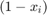
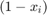

otvl
Orthogonal ternary vector lists (OTVL)
Contents
Syntax
obj = otvl(otvlArray)
Description
Use obj = otvl(otvlArray) to create an otvl object containing an OTVL.
Ternary vector lists arise from the field of Boolean algebra and find frequent usage in the Boolean Calculus [1]. Since Boolean functions are a subclass of multinlinear functions, OTVLs can serve as the basis for an efficient representation of a subclass of multilinear functions, see also [2]. OTVLs consist of a combination of three value types, that are logical true (1), logical false (0) and a "don't care operator" (-).
OTVLs can be represented as multilinear functions by multiplication of the elements in a row and addition of the rows. The element 1 in the OTVL represents the variable  , the element 0 represents  and the don't care operator - represents multiplication with the neutral element 1. Hence, a TVL
, the element 0 represents  and the don't care operator - represents multiplication with the neutral element 1. Hence, a TVL
| x1 | x2 | x3 |
|---|---|---|
| 1 | 1 | 0 |
| 1 | - | 1 |
| 0 | 0 | 0 |
can be represented as a multilinear function

Input arguments
otvlArray 3D array marking the positions of don't care operators, logical true and false in the OTVL
Output arguments
obj otvl object
Example create OTVL
An OTVL is stored as a threedimensional structure. The first dimension indicates the rows of the OTVL, the second dimension the columns. The third dimension stores the information about the value type. myotvl(:,:,1) contains the position of don't care values, while myotvl(:,:,2) contains the Boolean values.
% Create OTVL structure myTvlStruct1= false(3,3,2); myTvlStruct1(:,:,1) = [0 0 0; 0 1 0; 0 0 0]; %position of dont cares myTvlStruct1(:,:,2) = [1 1 0; 1 0 1; 0 0 0]; %Boolean values (position of logical true)
An otvl-object is then created by using the constructor method of the class otvl.
% Create OTVL
myOTvl1 = otvl(myTvlStruct1);
References
[1] B. Steinbach, C. Posthof "Logic Functions and Equations - Fundamentals and Applications using the XBOOLE-Monitor", 3rd Ed. Cham, Weitzerland: Springer, 2023
[2] M. Engels, G. Lichtenberg, and S. Knorn. "An approach to structured multilinear modeling with relaxed Boolean output functions", in 22nd IFAC World Congress, Yokohama, Japan, 2023, pp.7920-7925